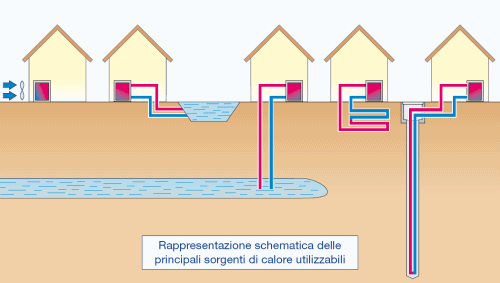
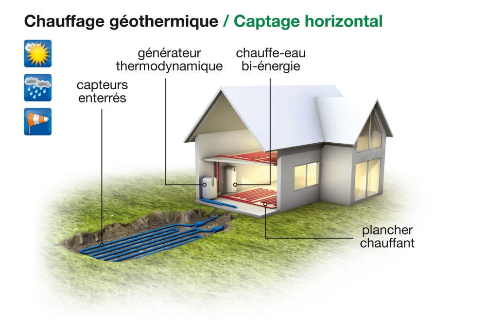

La Geotermia a Milano e in generale
La pompa di calore reversibile abbinata a sonde geotermiche assorbe calore dalla terra e lo trasferisce dell'abitazione o all'acqua da scaldare in inverno.
Le pompa di calore geotermica sfrutta le caratteristiche del suolo che da 20 a 100 metri di profondità mantiene una temperatura di circa 14 gradi centigradi.
Nel suolo,vengono praticate una o più perforazioni del diametro di 10-15 cm.All'interno dei fori vengono fatte passare delle condutture in cui la pompa di calore fa circolare un fluido termovettore.
La pompa di calore assorbe calore attraverso il fluido in un evaporatore, ne alza la temperatura attraverso il compressore, cede calore all'ambiente circostante attraverso il condensatore; durante questo processo viene consumata energia elettrica.
L'efficienza è espressa dal coefficiente di prestazione "C.O.P.", che è dato dal rapporto tra l'energia prodotta e l'energia consumata, e generalmente si aggira attorno a valori prossimi a 4, ma può variare a seconda del tipo di macchina; questo significa che una pompa di calore che produce circa 4 kWh termici impiega circa un solo kWh elettrico.

Sonde geotermiche verticali
Le sonde geotermiche hanno una profondità tipica che va da 50 a 350 m a seconda dell'utenza da servire. Nella perforazione viene introdotto un circuito in cui circola un fluido termovettore che serve da scambiatore di calore.
In un sottosuolo roccioso, le sonde geotermiche sono spesso il modo migliore per sfruttare l'energia geotermica.
Oltre alle sonde geotermiche propriamente dette, le applicazioni più comuni per sfruttare il calore del sottosuolo con pompe di calore sono: i pozzi di captazione e reimmissione di acque sotterranee, le serpentine nel terreno e i pali energetici
Sistemi ad acqua di falda
I sistemi a pozzi di captazione e di reimmissione sfruttano l'acqua di falda come sorgente di energia termica e come fluido termovettore.
L'acqua viene prelevata da un pozzo, ed il calore viene utilizzato mediante una pompa; successivamente l'acqua viene riconvogliata nel terreno tramite un pozzetto di drenaggio.
Le perforazioni per sistemi ad acqua di falda sono normalmente più costosi, anche se meno profondi di quelli di una sonda geotermica (30 metri).
La condizione più importante è quella della presenza di un flusso d'acqua sufficiente.
Serpentine e pali energetici
Le serpentine nel terreno e i pali energetici non sono delle vere applicazioni della geotermia, ma sfruttano piuttosto l'energia solare che riscalda il terreno in superficie fino a pochi metri di profondità.
Le serpentine vengono installate ad una profondità di pochi metri e sono disposte orizzontalmente nel terreno secondo diverse forme. I pali energetici sono scambiatori di calore integrati verticalmente nelle strutture di fondazione di una costruzione e hanno una profondità tipica di pochi metri.

Quanto costa
Il costo di un sistema completo può variare dai 10.000 ai 25.000 € per un'abitazione monofamigliare di 100 metri quadrati.
A questo va aggiunto il costo del sistema di distribuzione del calore all'interno dell'abitazione.
I costi sono molto variabili in funzione del fabbisogno di energia termica della costruzione da servire e del tipo di sottosuolo a disposizione; come indicazione generale si può ritenere che il costo di un impianto completo per un'abitazione di 100 metri quadrati posta a Milano vada dai 10.000 ai 25.000 €.
Tale costo comprende le indagini geologiche, una o più perforazioni ad una profondità di 100 metri, le sonde geotermiche, la pompa di calore (costa come una buona caldaia) e il sistema di accumulo.
A questi occorre sommare il costo di un impianto di riscaldamento a bassa temperatura quali pannelli radianti o ventilconvettori, sempre necessari con un sistema a pompe di calore geotermiche.